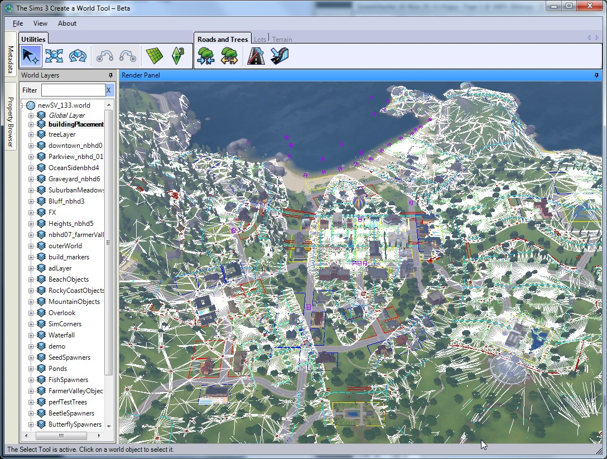
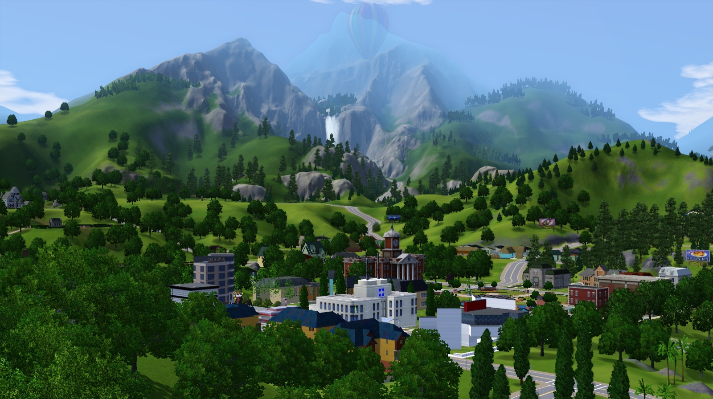
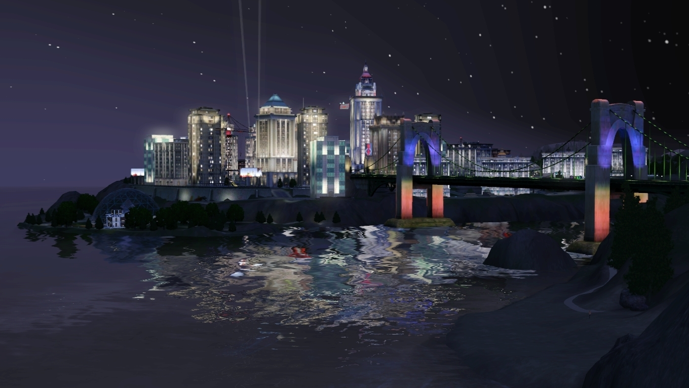
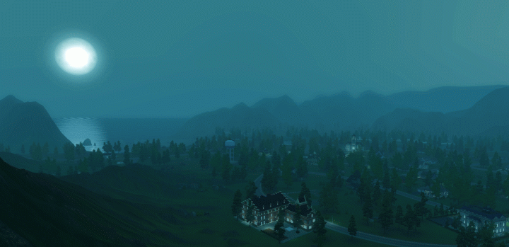
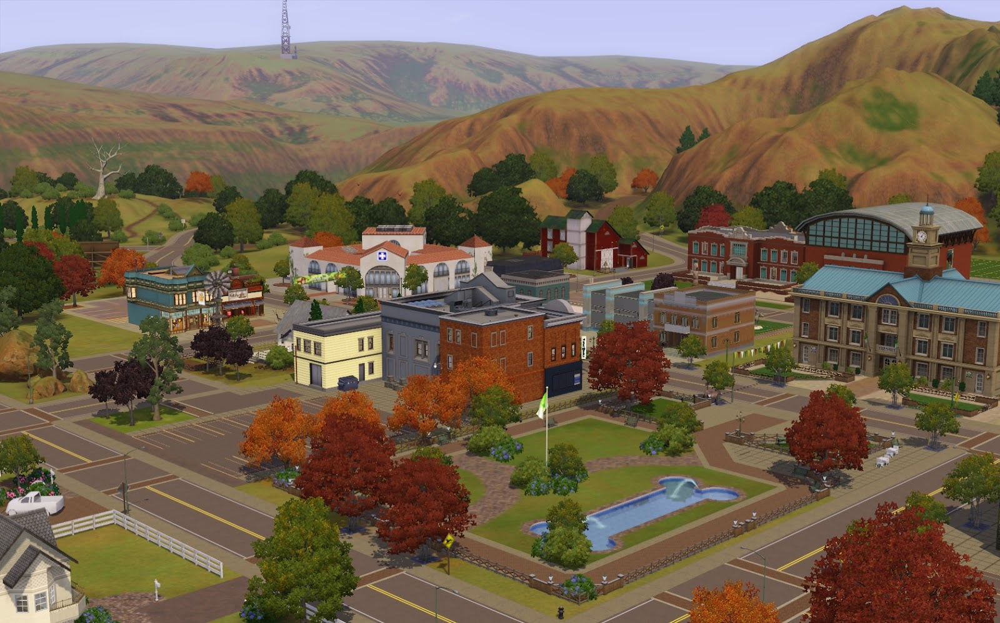
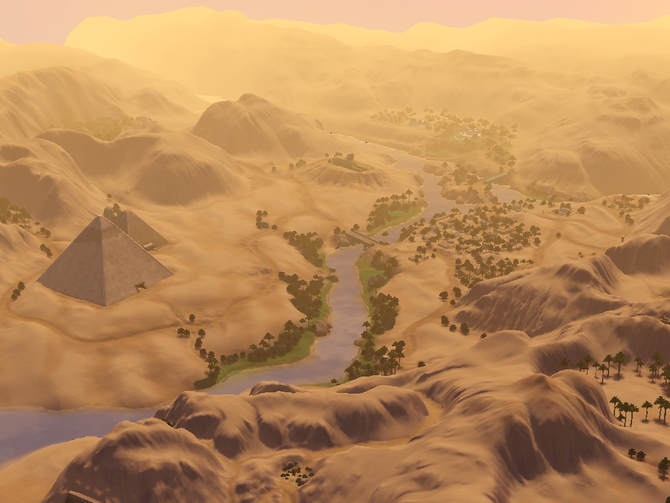
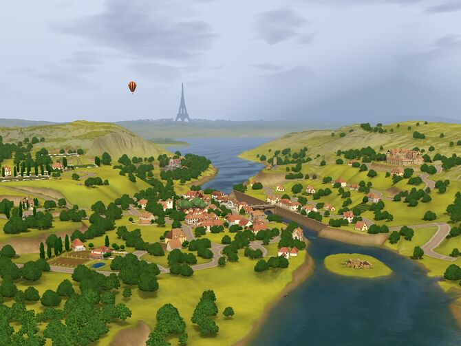
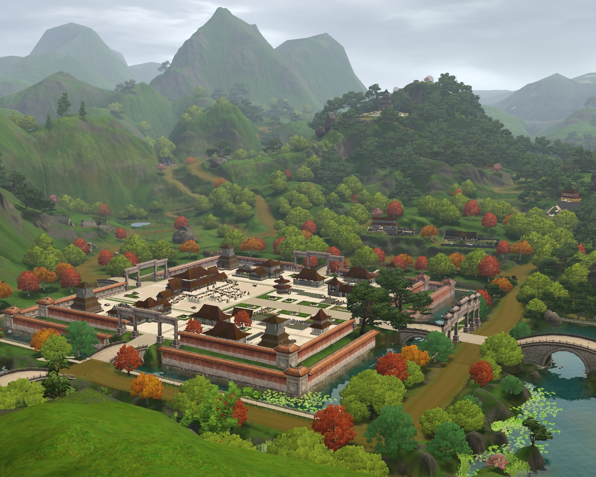
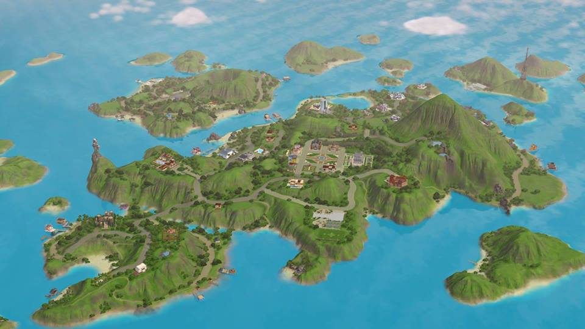

Sims 3 a introdus conceptul unei „lumi deschise” extinse. Mai ales la începutul dezvoltării jocului, acestea erau numite orașe, deoarece erau mult mai mari și mai complexe decât cartierele jocurilor anterioare. Lumile sunt deschise pentru ca Sims să poată fi explorate, iar Sims-urile pot fi controlate chiar și atunci când nu sunt prea multe. Clădirile și reperele majore din fiecare lume, inclusiv locațiile în care adulții pot lucra și unde copiii și adolescenții pot participa la școală, sunt reprezentate de găuri de iepure, care pot fi interacționate , dar nu pot fi privite de jucători. Fiecare lume are limite exterioare dincolo de care Sims nu pot călători, iar Sims nu pot vizita alte lumi (cu excepția „sub-lumilor”) fără NRaas Traveler, un mod care permite această funcționalitate. Jucătorilor li se oferă un grad mare de control asupra aspectului lumii prin meniul Editați orașul. Jucătorii își pot crea propriile lumi personalizate cu instrumentul Create a World, un program dezvoltat oficial, descărcat separat. În The Sims 3: Supernatural, jucătorii pot modifica numărul de Sims și celebrități supranaturale printr-o nouă setare cunoscută sub numele de „Setări de control al populației”.
Sunset Valley este foarte mare în comparație cu cartierele din jocurile anterioare The Sims, având un total de 92 de loturi cu diverse personaje jucabile și aproximativ 86 în total prefabricate. Partea principală a orașului este parcul, unde Simsul poate face un picnic, merge la pescuit sau poate face o plimbare și poate întâlni pe cineva nou; există, de asemenea, un cinematograf local, o sală de sport, restaurante, magazine, piscine și alte facilități de agrement. Sim-urile își pot vizita acum toate locuințele prietenilor și vecinilor și își pot chema prietenii cu noul telefon mobil, pentru o noapte în oraș. Sunset Valley combină ideile de construcții moderne și futuriste cu arhitectura nostalgică și designul înrădăcinat în suburbiile americane din anii 1950. Orașul este foarte unic din toate punctele de vedere și găzduiește 25 de familii care se pot juca. Sunset Valley este plin de locuri de explorat și are un peisaj urban foarte divers, lăsând jucătorilor ore de distracție în timp ce explorează singuri. Casele din Sunset Valley au un preț divers, dar fiecare grup mic de case are, în general, un preț similar. De exemplu, casele de pe plaja publică sunt, în general, ieftine, ceea ce le face case pentru Sims de tip clasa mijlocie inferioară, deși (dacă priviți apa ca la sud), cu cât mergeți mai la vest cu atât devin mai frumoase, până când sunt case de tipul clasei mijlocii-superioare. Summer Hill Court conține cele mai mari și mai scumpe loturi. Zona din spatele primăriei are unele dintre cele mai sărace case, iar în spatele acelei zone se află o zonă din clasa de mijloc. De-a lungul părții de est a Sunset Valley sunt niște case foarte frumoase, probabil pentru Sims din clasa mijlocie-înaltă. O vedere completă a Sunset Valley Există 21 de loturi goale disponibile pe care jucătorii le pot construi. Acestea au un preț de la §1200 la cel mai ieftin, până la §14.700 ca fiind cel mai scump. Cantitatea de spațiu (în pătrate) pentru clădire merge de la 19x29 la cel mai mic la 60x60 la cel mai mare. Cel mai scump lot, 15 Summer Hill Court, se află pe același deal cu conacurile Landgraabs și Alto (deși dacă pachetul de expansiune Pets a fost instalat, acest lot poate fi preluat de centrul ecvestru
Bridgeport este o lume care se livrează cu The Sims 3: Late Night. Este primul oraș urban de acest gen care a apărut în jocurile din seria The Sims, deoarece majoritatea cartierelor și lumilor trecute erau fie orașe, fie suburbii. Bridgeport a fost fondat de Ebenezer Alto, după cum se menționează în descrierea orașului. În trecut, Bridgeport a fost odată un oraș maritim plin de marinari și contrabandiști, unde singura plajă din Bridgeport se numește Golful contrabandistului, situat pe o mică coastă cu vedere la pod și la golf. Ceva mai târziu, Bridgeport s-a transformat într-un oraș cu viață de noapte când industria cinematografică a venit în oraș, transformând orașul mic într-un oraș plin de viață, cu clădiri înalte.
Producătorul Sims 3, Kari St. John, a declarat că Moonlight Falls a fost „inspirată de văile cețoase din nord-vestul Pacificului”. Reprezentanții EA nu au intrat în detalii despre lume, dar l-au descris ca un oraș misterios, plin de creaturi mistice și a fost fondat în 1974. Este situat lângă munți cu vârfuri înzăpezite. Lumea are o varietate de noi găuri de iepure, inclusiv active Create a World, inclusiv o primărie, un mausoleu și un turn de apă. Există o mulțime de copaci în zonă, precum și un râu care duce la o cascadă și două poduri ruginite sau de lemn peste râu. Există, de asemenea, un mic pod plat, posibil beton, peste râu chiar înainte de cascadă. Moonlight Falls vine cu povești cu personaje, precum disputele între familiile fondatoare. Familia vampirilor (Van Goulds) și familia vârcolacului (Wolffs) sunt în contradicție cu cine a fondat Moonlight Falls. Patriarhul familiei Van Gould este Ayden Van Gould, iar patriarhul familiei Wolff este Pappy Wolff. În ciuda feudelor, generațiile mai tinere ale acestor familii au găsit dragoste. Se pare că mulți dintre Sim-urile găsite în Moonlight Falls fac trimitere la mass-media cu tematică supranaturală. De exemplu, The Twilight Saga este menționată în Familia Swain, Marigold Maldano pare a fi un semn din cap la Sookie Stackhouse of True Blood, iar gospodăria Ronatates Supernatural seamănă cu seria Being Human Alte seriale la care se face referire în acest cartier includ Charmed, Bewitched, Harry Potter și Grimm. Pe lângă aceste referințe culturale, Bloom Institute of Wellness și Commonwealth Court se bazează pe clădiri din lumea reală (Spitalul Victoria pentru copii bolnavi din Toronto și, respectiv, Primăria orașului Massachusetts). Moonlight Falls este un oraș unic, deoarece pare să aibă un grup de munte în centrul orașului supranatural. Există o cantitate mare de poduri sugerate pentru transportul prin oraș. Există o plajă care arată aproape ca o coastă stâncoasă în zona de mijloc-est a suburbiei. Are un aspect foarte asemănător cu cartierul The Sims: Makin 'Magic, Magic Town, incluzând un râu stâncos în aceeași formă care trece prin oraș, o cascadă și pod în același loc, un lanț montan și același tip de copaci în tot orașul. Spre deosebire de vampirii din Bridgeport, vampirii din Moonlight Falls nu tind să aibă trăsătura malefică.
Appaloosa Plains este o lume introdusă în The Sims 3: Pets. Lumea a fost menționată pentru prima dată ca „un oraș liniștit de la țară, cu pajiști și păduri de explorat”. Câmpiile Appaloosa, în trecut, erau un oraș de fermă de cowboy din Midwest, la marginea autostrăzii. Odată cu trecerea timpului, orașul a degenerat într-un oraș fantomă neglijat, înainte de a se transforma în sfârșit într-un oraș mare. Orașul este numit după rasa de cal Appaloosa.
Câmpiile Appaloosa sunt centrate în jurul animalelor de companie și a activităților legate de animalele de companie, majoritatea gospodăriilor deținând cel puțin un animal de companie. Tema rurală a lumii poate fi văzută din abundența de case în stil fermă, cu hambare, împreună cu locația sa de pe deal, pe malul râului.
Al Simhara este o sub-lume de destinație prefabricată care a fost introdusă în The Sims 3: World Adventures împreună cu Shang Simla și Champs Les Sims.
Al Simhara este un pământ antic construit împotriva unui râu, plin de magie și mister. Este un ținut de mumii, piramide și crocodili. Se găsește în Egipt și prezintă activități și obiecte extrase din cultura egipteană. Numele este o referință la deșertul Sahara din Egipt. Acest oraș are morminte complet explorabile și morminte ascunse, inclusiv repere egiptene celebre, cum ar fi Piramidele, Sfinxul și Templul Reginei Hatshepsut. Simulatorii pot explora aceste morminte de referință, întreprinzând astfel aventuri. Compania MorcuCorp apare puternic în aceste aventuri. Este o subdimensiune excelentă pentru Sims pentru a-și îmbunătăți abilitatea de fotografie. Există numeroase familii prefabricate în Al Simhara, deși tuturor, din păcate, le lipsește textele descriptive și banii. O călătorie la Al Simhara costă §1600 pentru un Sim și §1000 pentru fiecare Sim suplimentar. Caracteristici Al Simhara:
Champs Les Sims este o sub-lume de destinație prefabricată în The Sims 3: World Adventures, alături de Al Simhara și Shang Simla.
Champs Les Sims a fost stabilit spre sfârșitul perioadei medievale și are o istorie și o cultură bogate. Orașul este modelat pe mici orașe rustice din Franța și oferă activități și obiecte care reflectă tradițiile franceze. Are clădiri din cărămidă și pășuni gălbui. Este o țară excelentă de cultivare a strugurilor și are un puternic sentiment de istorie. Simulatorii pot învăța cum să producă nectar (nealcoolic) aici. „Champs Les Sims” este franceză pentru „The Sims Fields” și este o referință la Champs-Élysées, un faimos bulevard vibrant din Paris. Unii oameni ar putea lega, de asemenea, Champs Les Sims de orașul francez Nîmes, renumit pentru un apeduct roman. În Champs Les Sims, există un viaduct cu o cale de tren care circulă pe el. Ocazional, un tren trece de la un tunel la altul. Trenul ar putea fi o referință la Orient Express, iar modelul său este reutilizat din cartierul Sims 2 Free Time Desiderata Valley. Simulatorii pot explora morminte de reper și morminte ascunse din această lume, întreprinzând astfel aventuri. Există numeroase familii prefabricate în Champs Les Sims, deși, din păcate, le lipsește tuturor textelor de descriere și banilor. O excursie la Champs Les Sims pentru un Sim costă 1900 de simoleoni (timp de trei zile). Este cea mai scumpă destinație de vacanță. În timp ce vizitează Champs Les Sims, Sim-urile stau într-o tabără de bază, cu excepția cazului în care au o viză de nivelul trei și au achiziționat o casă de vacanță. Toată Franța.jpg Dacă un Sim de sex masculin încearcă un copil cu un Sim de sex feminin din altă țară în timp ce se află acasă, Sim de sex feminin se va întoarce imediat acasă și copilul va fi deja în stadiul de copil. Caracteristici:
Shang Simla este o sub-lume de destinație prefabricată care a fost adăugată la The Sims 3 în The Sims 3: World Adventures, alături de Champs Les Sims și Al Simhara.
Shang Simla este o comunitate pașnică situată lângă o zonă muntoasă a Chinei, lângă Marele Zid. A fost fondată de un grup de călugări cu un etos al disciplinei și al artelor marțiale. Este plin de floră colorată, cum ar fi ulmi chinezi și cireși, care cresc pe dealuri verzi. Orașul poartă numele lui Shang Ri-La și se bazează pe un oraș montan din Shaanxi sau Shanxi, cel mai probabil Xi'an, dar are orașul interzis în mijloc, care se bazează pe adevăratul oraș interzis din Beijing. Această subcapitolă include activități și articole care completează cultura și arhitectura chineză. Shang Simla este centrul de instruire în abilitățile de arte marțiale introduse în World Adventures. Simulatorii pot explora, de asemenea, morminte de reper și morminte ascunse în întreaga lume, există numeroase aventuri de făcut. Există numeroase familii prefabricate în Shang Simla, deși, din păcate, le lipsește tuturor textelor de descriere și banilor. Textul descriptiv al unor obiecte introdus în Aventurile Mondiale se extinde pe tradiția lui Shang Simla, înfățișând personaje precum pictorul Han Shin. O călătorie la Shang Simla costă §1300 pentru un singur Sim și §1000 pentru fiecare Sim suplimentar, ceea ce îl face cea mai ieftină destinație de vacanță în care pot călători Sims-ul jucătorului. Caracteristici:
Isla Paradiso este o lume care apare în The Sims 3: Island Paradise. Orașul este un arhipelag care este alcătuit din multe insule și este folosit pentru a prezenta numeroasele caracteristici ale insulei Paradis. Orașul este similar cu Marea luminată de soare, care se bazează, de asemenea, pe o temă de insulă tropicală, deși Isla Paradiso are și mai multe insule. Spre deosebire de Sunlit Tides, care are o temă Pacific, Isla Paradiso are teme caraibiene și spaniole. Arhitectura orașului este fie spaniolă, fie pe plajă, fie modernă. Isla Paradiso are caracteristici unice care nu sunt disponibile în mod implicit în alte lumi. De exemplu, este singura lume care are zone de scufundare pentru ca Sims să se scufunde și să exploreze sub apă, deși unii jucători avansați își pot face propria lor în alte lumi. De asemenea, are 8 insule ascunse, care înconjoară orașul, care pot fi descoperite în anumite moduri. Odată descoperită, insula va fi deținută automat de descoperitor. Simulatorii pot transforma insula într-un lot rezidențial privat secundar sau într-o stațiune. Similar cu destinațiile de aventură World Adventures, Isla Paradiso este, de asemenea, împrăștiată cu cufere cu comori, ascunse în insule sau sub apă. Există 3 stațiuni pre-construite în Isla Paradiso, care au teme unice proprii. Stațiunile sunt Hobart's Hideaway (stil plajă), La Costa Verde (stil spaniol) și Sparkling Sands (stil modern). Hobart's Hideaway poate fi achiziționat gratuit și este destinat să fie o stațiune de pornire pentru a ajuta jucătorii să se familiarizeze cu gestionarea stațiunii. În plus, în Isla Paradiso există multe porturi și bărci casnice premade. Se pot vedea și alți rezidenți care mișcă bărcile, deci nu doar jucătorul va muta bărcile locuite. O caracteristică specială de la Isla Paradiso este observarea Kraken. Kraken va apărea ocazional sub apă atunci când barca de casă este în mijlocul oceanului pentru o lungă perioadă de timp și poate ataca Sims dacă sunt pe o barcă. Krakenul va apărea în Isla Paradiso numai datorită adâncimii oceanelor de acolo; majoritatea celorlalte lumi din The Sims 3 au corpuri de apă puțin adânci care nu pot susține Kraken. Cu toate acestea, Kraken poate fi văzut departe în ocean în Sunset Valley și Lucky Palms, unde apa este suficient de adâncă.
De asemenea, orașele se pot descărca de pe internet de la diferiți creatori talentați. Recomand site-ul: 🏢